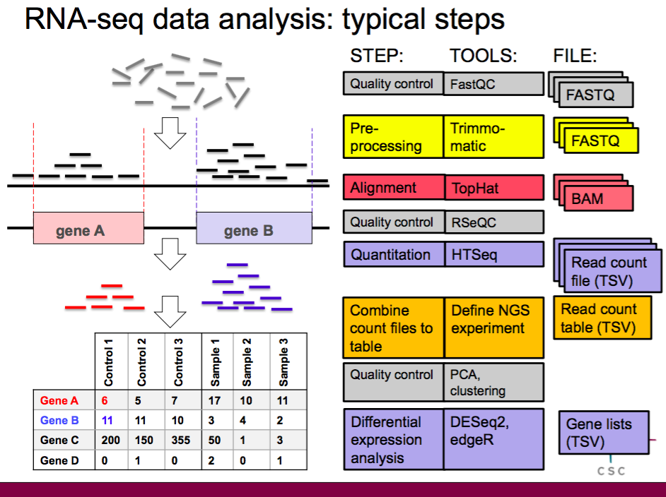

RNA-seq data analysis to find differentially expressed genes
We have gathered resources for RNA-seq data analysis here to help you getting started!
- If RNA-seq is a whole new topic to you, we suggest checking out the Introduction to RNA-seq webinar (1h),
which introduces the steps of differential expression analysis. This video covers also the 101 of using Chipster.
- After the webinar, you might like to try the analysis tools yourself -for that we suggest going through our course exercises. Open the excercises pdf document, log in to Chipster, and just follow the instructions! The exercise data are available as example sessions on the Chipster server, and
we also provide ready-made analysis sessions which you can use as a reference when doing exercises on your own.
- Some analysis steps can raise more questions. Please find below more detailed instructions for each step and see also the RNA-seq playlist on our YouTube channel.
I Getting started with Chipster
II Importing your data to Chipster
- Importing your files to Chipster: Manual
III Analysis steps for finding differentially expressed genes
These steps take you from raw reads to differentially expressed genes (please find a figure showing the different steps and file formats at the end of the page):
- Quality control of raw reads
Check the number, quality encoding, strandedness and inner distance of your reads, and inspect them for base quality, biases and adapters.
Tools under the Quality control category (input FASTQ files. Note that the tools can handle zipped files, so please don't unzip them):
- Preprocessing raw reads
If the reads contain low quality bases or adapter sequences, you might like to trim or filter them.
Note that when preprocessing paired end data, you need to give the two read files simultaneously to the analysis tool in order to preserve the order of read pairs.
Trimming or filtering is not absolutely necessary, because many bad quality reads are removed when aligning reads to the reference genome in the next step.
This depends on the aligner used, as aligners differ in their ability to cope with mismatching bases.
Tools under the Preprocessing category (input FASTQ files):
- Alignment of reads to reference genome
Chipster offers a large selection of reference genomes. If your reference genome is not available, you can import it as a fasta file and use the "own genome" version of the alignment tool.
You can also ask us to add the genome in Chipster if it is publicly available and commonly used.
Note that some sequencing platforms generate several FASTQ files per sample. For example, Illumina NextSeq generates 8 files per sample for paired end data.
In this case you need to first generate file name lists (one for read 1 files and another for read 2 files), and give those list files and all the FASTQ files as input for the aligner.
Please read the manual for the Utilities/Make a list of file names tool for more info.
Note that aligners need the strandedness / library type information in order to align reads correctly. As there are two possible strandedness types
and several kits for producing stranded sequencing libraries, we have made a summary of strandedness options and nomenclature.
Tools under the Alignment category (input FASTQ files), note that there are separate HISAT2 and STAR tools for single and paired end data, and for user-supplied reference genome:
- Alignment level quality control
Check what proportion of the reads mapped to exons, is the coverage uniform over transcript length, and whether novel splice sites were found.
Tools under the Quality control category (input BAM files):
- Quantitation
Count reads per gene. The quantitation is done separately for each BAM file. At this step you also need to set the library type / strandedness -make sure you choose the correct parameter!
Tools under the RNA-seq category (input BAM file):
- Combine all samples in one table and describe the samples using the phenodata file
Now we need to combine all the count files into a one table where rows are genes and columns are samples.
Select all the blue count files (samplename.tsv) and run the tool Utilities/Define NGS experiment.
In addition to the count table this tool generates a phenodata file, which is used to describe samples in Chipster. Fill in the group column using numbers so that you mark control samples with 1 and treatment samples with 2.
You can add more columns if you have more experimental factors.
You also want to make sure that the Description column is, well, descriptive, and the titles there are short enough,
as these are as sample names in many visualisations.
You might like to check out our tutorial video (3 min)
and manual page on how to fill in the phenodata file.
Tool under the Utilities category (input tsv files):
HINT: If your FASTQ files are big, at this point it might be wise to save your session,
remove the FASTQ and BAM files, and save the session again with another name. It makes your session smaller and easier to handle!
You can always return to the original session with the bigger files if needed.
Note that the cloud sessions are not stored forever, so for longer storage, save the sessions also locally!
- Experiment level quality control
Now we have our data in one table, and it is time to do some experiment level quality control
-this is the exciting part where you get to see whether your sample groups show differential expression!
Check out from the PCA plot and heatmap that the sample groups separate from each other and that there are no outliers.
Now you can also see if there are some possible batch effects lurking in your data (see the Drosophila example session to see what you should be looking for).
If you notice something, make sure you take it into account in the next step!
Tool under the Quality control category (input count table):
- Differential expression analysis
Time for statistics! It is actually quite tricky to estimate differential expression because we are testing tens of thousands of genes (multiple testing correction is needed), expression values are not normally distributed
(instead, negative binomial distributions and generalised linear modeling are used), and
the range in which genes expression values vary varies from gene to gene (dispersion estimation).
Luckily, there are tools that do all these tricky things for you. These tools are presented in our video tutorial
Differential expression analysis tools for RNA-seq (3 min).
Things get trickier if you have multiple variables, like treatment, gender, batch to take into account simultaneously.
For these cases, you need to use the tool called Differential expression using edgeR for multivariate experiments
-check out the video tutorial for that
here (6 min),
and a specific tutorial for cases where you need to use this "nested" option
here (4 min).
Tools under the RNA-seq category (input count table). Note that these tools nead raw counts, so don't do any normalisation like FPKM.
